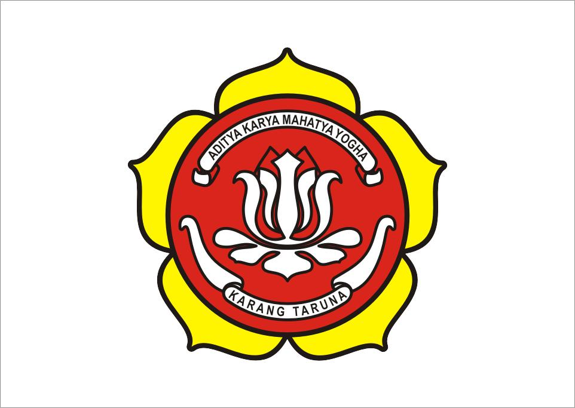

Struktur Organisasi


Bersama Karang Taruna Membangun Generasi, Maju Bersama
Karang Taruna Kelurahan Saringan merupakan organisasi sosial kepemudaan yang menjadi wadah pengembangan potensi generasi muda dalam bidang sosial, keagamaan, olahraga, ekonomi kreatif, teknologi, serta pengabdian kepada masyarakat.
Karang Taruna hadir sebagai mitra pemerintah dan masyarakat dalam membangun generasi muda yang aktif, kreatif, mandiri, berdaya saing, serta memiliki kepedulian sosial yang tinggi terhadap lingkungan sekitar.
Mewujudkan Karang Taruna Kelurahan Saringan yang aktif, kreatif, mandiri, berdaya saing, peduli sosial, serta menjadi wadah pemuda yang inovatif dan berakhlak dalam menghadapi tantangan era digital.
📧 Email : karangtarunasaringan@gmail.com